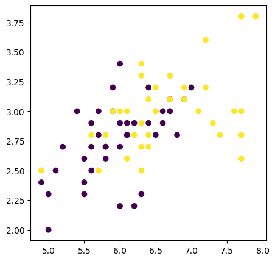
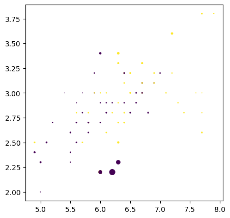
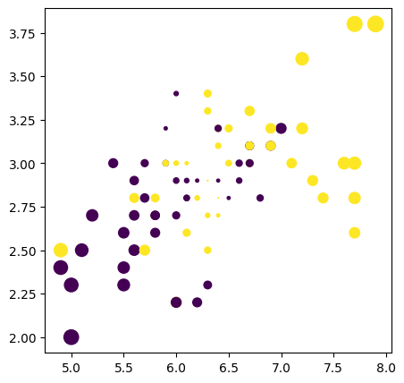
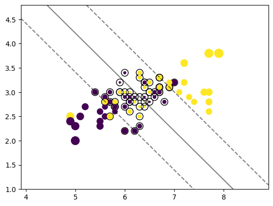
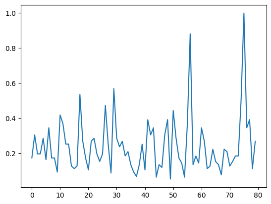

Iris is a relative easy dataset. We will pick two features, and pick versicolor and virginica lables as there seems to be some overalp in the feature space. We will look at this two dimensional data from many angles and see what can we learn about
We will build a simple linear model (no interactions), then an MLP, use the Linear Model to define sample hardness. Later, we will remove those points, and retrain an MLP. And see the difference. Along the way, we will see different sample hardness measures.
on train set
precision recall f1-score support
versicolor 0.69 0.72 0.71 40
virginica 0.71 0.68 0.69 40
accuracy 0.70 80
macro avg 0.70 0.70 0.70 80
weighted avg 0.70 0.70 0.70 80
on test set
precision recall f1-score support
versicolor 0.82 0.90 0.86 10
virginica 0.89 0.80 0.84 10
accuracy 0.85 20
macro avg 0.85 0.85 0.85 20
weighted avg 0.85 0.85 0.85 20
RMD
Let us compute the Mahalanobis Distance (MD) and Relative Mahalanobis Distance (RMD) to flag RMD score
Ref A Simple Fix to Mahalanobis Distance for Improving Near-OOD Detection. In the paper, while computing the foreground MD, while the means are specific to each class, the covariance is common to all classes. The background model to compute the MD assumes a common mean and covariance. You compute the difference between the foreground MD and the background MD, and take the minimum.
But it is must simpler to implement (using sklearn covariance APIs) MD and RMD with class specific covariance. We will implement this slight modification of RMD for a two class problem.
# let us compute RMD for this two featuresfrom sklearn.covariance import EmpiricalCovariance, MinCovDetX1 = X_train[y_train==0,:]print('1st group', X1.shape)X2 = X_train[y_train==1,:]print('1st group', X2.shape)# class-specific covariancesSig1 = MinCovDet().fit(X1)Sig2 = MinCovDet().fit(X2)# covariance for the entire data, dropping the class labelsSig = MinCovDet().fit(X_train)# sklearn has mahalanobis functions. we don't have to implementm1 = Sig1.mahalanobis(X_train)m2 = Sig2.mahalanobis(X_train)m = Sig.mahalanobis(X_train)rmd_1 = (m1-m)rmd_2 = (m2-m)# take the min of m1, m2 for each record, subtract m. will take exp to keep them positive.conf_rmd = np.exp(-np.minimum(rmd_1, rmd_2))_, ax = plt.subplots(figsize=(5,5))scatter = ax.scatter(X_train[:, 0], X_train[:, 1], c=y_train)_, ax = plt.subplots(figsize=(5,5))scatter = ax.scatter(X_train[:, 0], X_train[:, 1], c=y_train,s=conf_rmd)
1st group (40, 2)
1st group (40, 2)


Margins
Given some representation of the data (or embedding), we can use very well known ML techniques to come up similar statistics like RMD. For example, we can fit an SVM, and calculate the margins for each instance. Not only we solve the prediciton problem, we can get secondary statistics, which are useful in determining the difficulty of the sample to the model.
from sklearn.svm import LinearSVCfrom sklearn.inspection import DecisionBoundaryDisplayfrom sklearn import svmclf = svm.SVC(kernel="linear", C=1000)clf.fit(X_train, y_train)y_test = clf.predict(X_test)print('on test set')print(classification_report(y_train, yh_train, target_names=['versicolor','virginica']))print('on test set')print(classification_report(y_test, yh_test, target_names=['versicolor','virginica']))
on test set
precision recall f1-score support
versicolor 0.69 0.72 0.71 40
virginica 0.71 0.68 0.69 40
accuracy 0.70 80
macro avg 0.70 0.70 0.70 80
weighted avg 0.70 0.70 0.70 80
on test set
precision recall f1-score support
versicolor 1.00 0.85 0.92 13
virginica 0.78 1.00 0.88 7
accuracy 0.90 20
macro avg 0.89 0.92 0.90 20
weighted avg 0.92 0.90 0.90 20
# calculate the margin of all data points in the training set, already available in sklearnconf = clf.decision_function(X_train)_, ax = plt.subplots(figsize=(5,5))scatter = ax.scatter(X_train[:, 0], X_train[:, 1], c=y_train,s=50*np.abs(conf))

# plot the decision functionax = plt.gca()DecisionBoundaryDisplay.from_estimator( clf, X_train, plot_method="contour", colors="k", levels=[-1, 0, 1], alpha=0.5, linestyles=["--", "-", "--"], ax=ax,)# plot support vectorsax.scatter( clf.support_vectors_[:, 0], clf.support_vectors_[:, 1], s=100, linewidth=1, facecolors="none", edgecolors="k",)ax.scatter(X_train[:, 0], X_train[:, 1], c=y_train,s=50*np.abs(conf))plt.show()print('Train size', len(X_train))print('# of support vectors', len(clf.support_vectors_))

Train size 80
# of support vectors 56
At inference time, we can flag instances with low confidence. A simple heuristic to flag us, the confidence score has to be greater than the confidence of the suppost vectors.
# get the smallest confidence that is not of a support vectorsv = clf.support_# get the conf of those support vectorsconf_sv = clf.decision_function(X_train[sv,:])# get conf of all points in the train setconf = clf.decision_function(X_train)print('conf',conf.shape)# get the mix conf of SVs from the training datathresh = np.max(conf_sv)print('max conf of support vectors is: ', thresh)
conf (80,)
max conf of support vectors is: 1.2440925839422636
Either we can remove the points with low confidence and re-train the model, or pass a sample weight based on the confidence, and retrain the model.
# At inference time, flag test points as low conf or high confconf_test = clf.decision_function(X_test)ind_high_conf = np.where(conf_test > thresh)print('Test points that with high confidence', ind_high_conf[0].tolist())ind_low_conf = np.where(conf_test <= thresh)print('Test points that with low confidence', ind_low_conf[0].tolist())
Test points that with high confidence [13]
Test points that with low confidence [0, 1, 2, 3, 4, 5, 6, 7, 8, 9, 10, 11, 12, 14, 15, 16, 17, 18, 19]
We can look at the accuracy of test data on high conf and low conf data points on train set, as we seem to have not many points in the test set.
We achieve perfect accuracy on the train set in which all samples have high confidence. And accuracy is around ~ 60% on the samples with low confidence. This demonstrates an important aspect – not all samples will have equal degree of confidence, and if there is a way to flag them, and deal with in the downstream task, we can bring reliability into the system.
We have chosen the threshold based on some intuition that, typically support vectors will be closed to the separating hyper plans and will exactly sit on the hyperplanes. So, if we choose points whose are farther from the support vectors, they should be farther away from the decision boundary and hence easy to classify.
But this way of choosing the thresholds does not give any statistical guarantees. One to has to choose the threshold via some cross-validation procedure. Later, we will see conformalization techniques which address this issue.
One way to incorporate the confidence or sample easiness into training procedure is to, remove all difficult examples and retrain the model. Or convert the RMD or other types scores into weights and use a weighted loss, instead.
# create weight from conf, and fit a logistic regression with weighed samplesweights = np.exp(0.5*conf)scaler = np.max(weights)weights = weights/scalerplt.plot(weights)plt.show()plt.plot(conf)

# fit a logistic model with sampled weightsweighed_model = LogisticRegression(random_state=0).fit(X_train, y_train, sample_weight=weights)yh_test = weighed_model.predict(X_test)# get conf from margins of svmconf_test = clf.decision_function(X_test)test_weights = np.exp(conf_test)/scalerprint('on test set w/o weights')print(classification_report(y_test, yh_test))print('on test set with weights')print(classification_report(y_test, yh_test, sample_weight = test_weights ))
on test set w/o weights
precision recall f1-score support
0 1.00 0.62 0.76 13
1 0.58 1.00 0.74 7
accuracy 0.75 20
macro avg 0.79 0.81 0.75 20
weighted avg 0.85 0.75 0.75 20
on test set with weights
precision recall f1-score support
0 1.00 0.41 0.58 1.5365777483728735
1 0.78 1.00 0.88 3.298054168177313
accuracy 0.81 4.834631916550187
macro avg 0.89 0.70 0.73 4.834631916550187
weighted avg 0.85 0.81 0.78 4.834631916550187
Overall accuracy improves. Based on our earlier observations, we can predict class 1 much better than class 0. Interestingly, this can also be interpreted as a different form of regularization. Typically, one would place a constraint on the norm of the parameters, implying, one is enforcing smoothness constraints on the functional space. Here, by reweighting the loss, the learning algorithm gives less importance is difficulty samples, there by, the function to be fit, need to do lot of hard work (i.e very complex function) but a simpler function (meaning smooth function) would suffice. So, while the goal is same (smooth function), the way one goes about can be different. The path of regularization, to a large extent, is a brute-force approach, but reweighting one exactly knowns what is the influence of each example in the training.